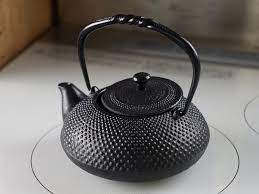
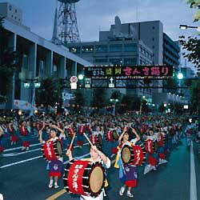
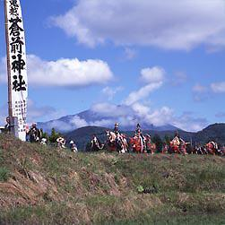

一言
ここのページでは岩手の魅力的な伝統文化を紹介したいと思います
南部鉄器
南部鉄器は岩手県で主に生産されている伝統工芸品の一つです。その歴史は古く、17世紀には製造が始まっている。その見た目から今でも多くの人気を持っている。
さんさ踊り
藩政時代から伝わる盆踊り「さんさ踊り」が市内の目抜き通りで4日間繰り広げられる。総勢2万人からなる大人数で踊りを行う、彼らのの浴衣姿も鮮やかになり、力強いリズムにあわせて、勇壮でエネルギッシュな群舞は迫力満点。観客も自由に参加できることが魅力の一つである。
チャグチャグ馬っこ
農耕馬に感謝する伝統行事。色鮮やかな装束で着飾った馬と馬主は早朝、蒼前神社に参拝し、盛岡八幡宮まで約5時間かけて行進する。その際に見られる馬の装飾は必見。